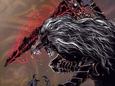

Beast Clergyman and Maliketh, The Black Blade is a two-phase Legend Boss in Elden Ring. Gurranq, Beast Clergyman is found at the end of Crumbling Farum Azula and is revealed to be Maliketh, the Black Blade. Similar to how Blaidd is to Ranni, Maliketh is Queen Marika's shadow-bound beast. He was tasked to guard the Rune of Death, but his failure to do so led to the Night of the Black Knives. In order for this to never happen again, he imbued the rune into his very flesh. This is not an optional boss, as players must defeat it to advance to Leyndell, Ashen Capital and finish the game. Gurranq, Beast Clergyman is an NPC variant of the first phase of this boss. See Maliketh, The Black Blade Lore
